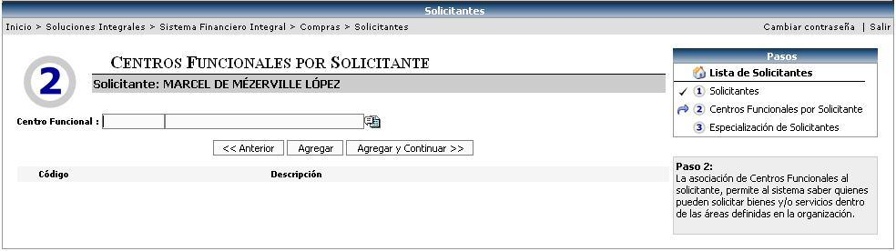
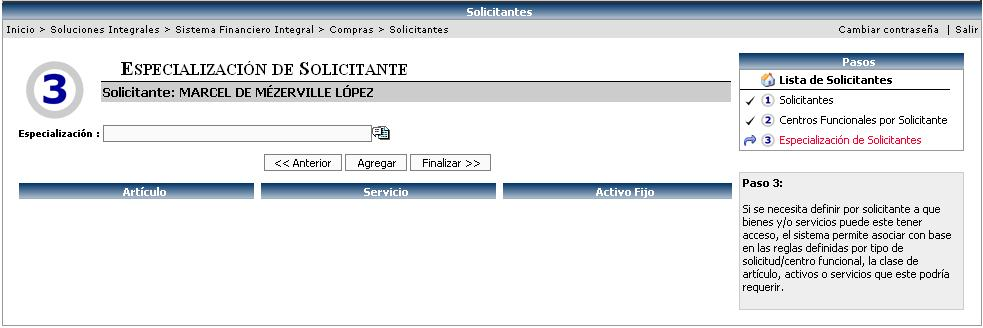
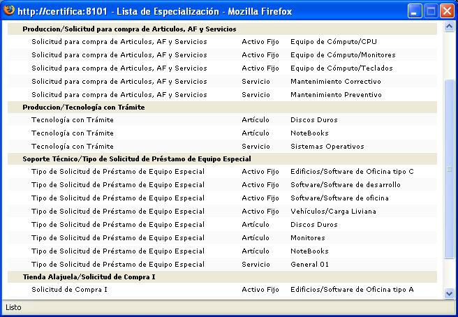

En esta opción se van a relacionar a las personas encargadas de hacer Solicitudes de Compra, con los Tipos de Solicitudes creados anteriormente; permite indicarle al sistema cuales son las personas que pueden solicitar bienes o servicios a través del sistema y cuales son los privilegios o posibilidades de compra y afectación presupuestal de cada uno
Se deben de seguir tres pasos para la creación de los Solicitantes, los cuales son:
• Crear el Solicitante
• Asociarle los Centros Funcionales
• Especializar al Solicitante según el Centro Funcional.
2.1 Crear el Solicitante:
El sistema permite crear solicitantes con base en: solicitantes asociados al número de empleado, si existe integración con Recursos Humanos o solicitantes asociados a los usuarios definidos en el portal (esto depende de la parametrización del sistema)
Para esto se debe de crear un código de solicitante. Seleccionar de una lista al solicitante (empleado / usuario) y el centro funcional al cual pertenece el solicitante. Además definir si esta activo o no, activando el check.
El centro funcional que se parametriza en esta pantalla, es el que será tomado en cuenta por el sistema a la hora de aprobar un trámite (si el tipo de solicitud lo tiene asociado) para saber cual es el jefe de ese solicitante y realizar el estudio de la jerarquía.
Para continuar con el
siguiente paso y guardar la información, se debe de presionar el botón
de 
2.2 Asociarle los Centros Funcionales
En este paso se le asignan los centros funcionales al solicitante y con esto podrá saber “los permisos de compra” o para que áreas esta el solicitante que se esta creando autorizado a comprar.

El botón de botón  incluye
la (s) línea (s) de los centros funcionales.
incluye
la (s) línea (s) de los centros funcionales.
Para continuar con el
siguiente paso y guardar la información, se debe luego presionar el botón
de 
2.3 Especializar al Solicitante según el Centro Funcional.
Aquí se define por solicitante los bienes y/o servicios a los que puede tener acceso. El sistema permite asociar con base en las reglas definidas, por Tipo de Solicitud y Centro Funcional, los artículos, los activos fijos o los servicios.
De esta manera es posible indicarle al sistema que personas o solicitante tienen o no permisos de realizar algún tipo de compra en particular; es importante mencionar que si se asigna especialización, se le esta indicando al sistema que el solicitante solamente puede compra lo indicado, en caso de no indicar especialización, se le estaría indicando al sistema que el solicitante tiene permiso de realizar compras de todos los bienes o servicios existentes.

La lista de especialización que se desplegará, será la información que se ingreso en el tipo de solicitud para un determinado centro funcional.

Se selecciona la especialización deseada de la lista y se agrega al solicitante.
Un ejemplo de la pantalla de lista de especializaciones es el siguiente, donde se muestra el tipo de solicitud por centro funcional.

“El solicitante Rodolfo Jiménez Jara puede solicitar:
Artículos:
- del centro funcional Compras de la solicitud: Solicitud para compra de artículos, AF y servicios, solamente papelería.
- del centro funcional Producción de la solicitud: Tecnología, solamente Notebooks.
Servicios:
- del centro funcional Producción de la solicitud: Solicitud para compra de artículos, AF y servicios, solamente Mantenimiento Correctivo.
Activos Fijos:
- del centro funcional Producción de la solicitud: Solicitud para compra de artículos, AF y servicios, solamente Equipo de Cómputo/Teclados”.
Para finalizar la creación
del Solicitante se debe de presionar el botón